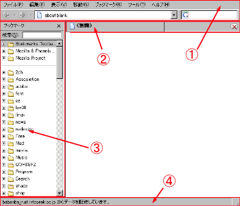

Mozillatheme:主な変更箇所解説

①ツールボックス部分
主な変更箇所:global/toolbar.css、global/menu.css
②タブ部分
主な変更箇所:global/tabbar.css
③サイドバー部分
主な変更箇所:global/tree.css、glocal/scrollbar.css
④ステータスバー部分
主な変更箇所:global/global.cssのstatusbar, statusbarpanel